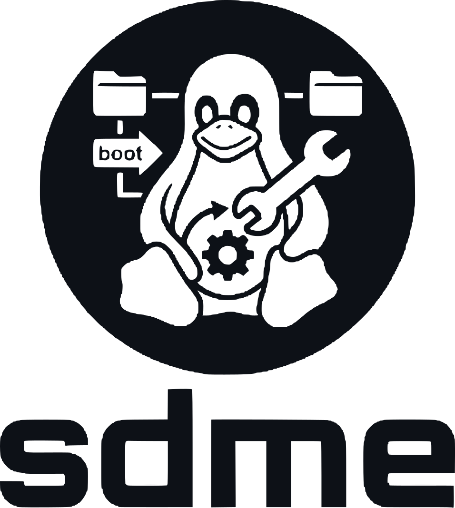

The systemd machine editor: a command line tool for managing systemd-nspawn booted containers on Linux.
curl -fsSL https://fiorix.github.io/sdme/install.sh | sudo shAuto-detects architecture (x86_64 / aarch64) and verifies SHA256 checksums.